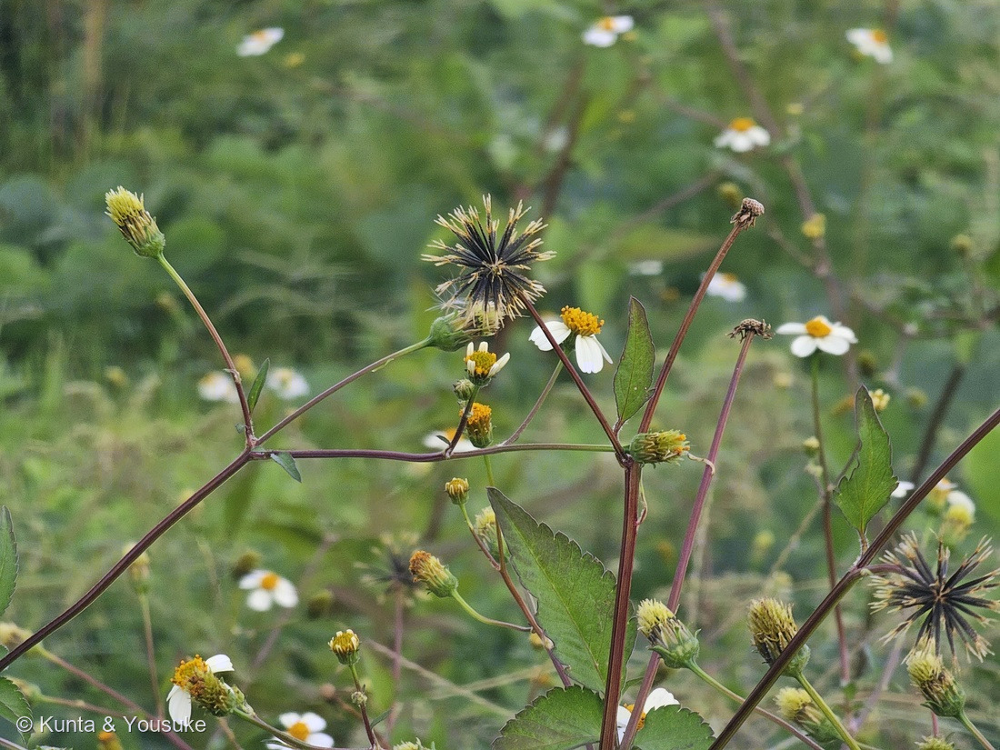
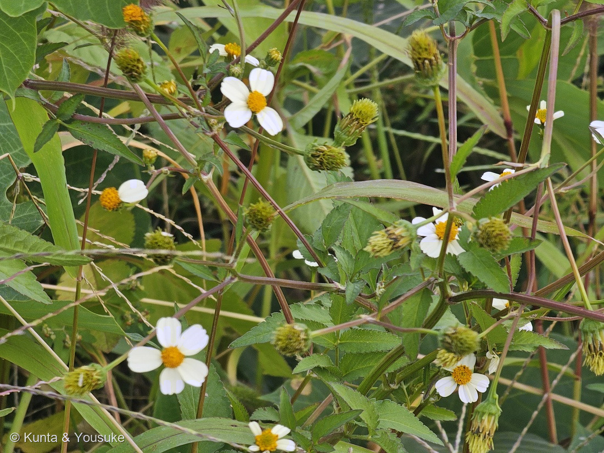

地図を読み込んでいるよ…
🔍 写真も地図も、押しているあいだ拡大して見られるよ（スマホは指を置いてすこし待ってね）。
🌍 の地図＝この子がもともと自生している場所を緑に。熱帯アメリカ（種のレベルで）。日本へは江戸時代の終わりに来た記録があり、戦後にふえた帰化植物。くわしくは下の地図の説明を見てね。
⭐熱帯アメリカの子だよ＝英語版Wikipediaは Bidens pilosa を「native to tropical America」とする。⚠Wikipedia（日本語）の「コセンダングサ」は「北アメリカ原産」と書いていて、出典によって言いかたがちがう＝⭐この図鑑では英語版にならって、メキシコから南アメリカまでの熱帯アメリカを塗った。⚠日本は塗っていない＝コシロノセンダングサは江戸時代の終わり（弘化年間）に来た記録があり、戦後に急にふえた帰化植物（三河の植物観察）。⭐いまは世界の暖かい地域にひろく帰化している。⭐くっつく実で、人や動物に運ばれて広がったんだね。
⚠ 地図は国（日本と中国だけ県・省）までしか塗れないから、ほんとうの分布より広く見えていることがあるよ。地図はだいたいの場所。正確なところは、上の文を見てね。
コシロノセンダングサ（小白の栴檀草）
Bidens pilosa L. var. minor (Blume) Sherff
別名 · シロノセンダングサ／英名（種として）hairy beggarticks・Spanish needles・blackjack／⚠タチアワユキセンダングサ（B. pilosa var. radiata）の可能性は落としきれていない
キク科 · Asteraceae（センダングサ属 Bidens · キク目 Asterales）
燻太さんの言葉「鉤爪がついた細い果実の黒い花火が印象的。でもこれ、刺さるといたいんだよね。」── ⭐刺の先に、逆向きの小さな刺。属名 Bidens は「ふたつの歯」
⭐⭐⭐ 名前と学名の由来 ── 「ふたつの歯」と、センダンの葉
- ⭐⭐ 属名 Bidens（ビデンス）は、ラテン語の bi（ふたつ）＋ dens（歯）（英語版Wikipedia）。⭐実の先にある刺（芒）のことだよ。⭐燻太さんの言う「鉤爪」が、名前になっているんだね。
- ⭐ 種小名 pilosa は「毛のある」（⚠ラテン語の意味からのぼくの読み）。⭐コセンダングサの葉は両面に細かい毛がある（Wikipedia「コセンダングサ」）。⭐英名のひとつも hairy beggarticks（毛のある、こじきのダニ）。
- ⭐⭐ 和名の「センダングサ（栴檀草）」は、葉がセンダンに似ていることによる（日本大百科全書）。⭐センダンは、羽のように分かれた葉をつける木。
- ⭐ 「コシロノ（小白の）」は、白い花のコセンダングサという意味（三河の植物観察の漢字「小白の栴壇草」から）。⭐「小」はコセンダングサの「コ」で、ほんとうに小さいわけではないよ（⚠Wikipedia は、コセンダングサもセンダングサより小さくはないと書いている）。
- ⭐ 英語では Spanish needles（スペインの針）や blackjack とも呼ばれる（英語版Wikipedia）。⭐黒い針のような実の見た目そのままだね。
⭐⭐⭐ この植物のこと ── 白い花と、黒い花火
- ⭐⭐ キク科の一年草で、頭花はまんなかの黄色い筒状花と、まわりの白い舌状花でできている。⭐コシロノセンダングサの舌状花は4〜8個（おもに5〜7個）で、長さ5〜7mm、先が3つに浅く裂ける（三河の植物観察）。⭐燻太さんの数えた「5枚くらい」は、ちょうどまんなか。⭐写真②の舌状花の先にも、小さなぎざぎざが見えるよ。
- ⭐⭐ 葉は対生して、3出複葉から羽状複葉（三河の植物観察）。⭐写真②のぎざぎざの葉が、3〜5枚の小葉に分かれているのがそれ。
- ⭐⭐ 茎は赤むらさきを帯びて、すっと伸びる（写真①②）。⭐コセンダングサは高さ50〜110cm、茎は4稜（まれに6稜）（Wikipedia・三河の植物観察）。
- ⭐⭐⭐ 燻太さんの「黒い花火」は、熟した実のかたまり。⭐ひとつひとつの黒い棒が、1つの実（痩果）。⭐花のあと、総苞の中で実が育ち、熟すと外へ反りかえって、放射状の「花火」になる（写真①）。
- ⭐ 写真①の右上の、茶色いつぶつぶの台は、実がぜんぶ飛んでいったあとの花托。⭐花火が終わったあとのすがただよ。
- ⭐⭐ 原産は熱帯アメリカ（英語版Wikipedia・B. pilosa として）。⭐コシロノセンダングサは江戸時代の終わり（弘化年間）に来た記録があり、戦後に急にふえた。本州中部より西の、町の近くの荒れ地によく見られる（三河の植物観察）。⭐通勤路の草むらは、まさにそういう場所。
- ⭐ 英語版Wikipedia は、B. pilosa の葉は世界のあちこちで野菜として食べられ、薬草としても使われると書いている。⚠ぼくは食べてみることはすすめないよ。
⚠ 同定について ── 白い舌状花で、コセンダングサとは分かれる
- ⭐⭐⭐ まずセンダングサ属で決まり＝黒くて細い実が放射状に開き、先に刺がある（写真①）／葉は羽状に分かれ、ふちがぎざぎざ（写真②）。
- ⭐⭐⭐ コセンダングサ（B. pilosa var. pilosa）ではない＝コセンダングサの頭花は、ふつう筒状花だけで舌状花が無い（Wikipedia）。⭐写真②には白い舌状花がはっきり5枚ほどある。
- ⭐⭐ コシロノセンダングサとタチアワユキセンダングサは、舌状花の長さで分ける＝コシロノは5〜7mm、タチアワユキ（オオバナノセンダングサ）は8〜15mm（三河の植物観察）。
- ⚠⚠ 写真には物差しが無いので、長さを測れていない。⭐写真②では、舌状花の長さが、まんなかの黄色いかたまりの直径の約1.4倍＝⚠黄色いかたまりの大きさが分からないので、これだけでは決められない。
- ⭐ タチアワユキセンダングサは本州から小笠原まで帰化しているけれど「沖縄に多い」、コシロノセンダングサは「本州中部以西の都市近郊の荒れ地によく見られる」（三河の植物観察）。⭐だから通勤路の子は、コシロノセンダングサとみたよ＝⚠「たぶん」をつけておく（宿題①）。
- ⚠ 三河の植物観察は「三者を区別せず、まとめて Bidens pilosa とする説もある」と書いている。⭐GBIF では var. minor も var. radiata も、B. pilosa の変種として認められている。⭐いっぽうで、タチアワユキのなかまを別の種 Bidens alba とする考えかたもある（GBIF では B. alba も認められた名前）。⭐名前の線の引きかたは、まだゆれているなかまなんだ。
- ⭐ おまけのアメリカセンダングサとはちがう＝あちらは舌状花が小さくて目立たず、頭花より長い葉のような総苞片がつき、実の先の刺は2本（Wikipedia）。
⭐⭐⭐⭐ 燻太さんの「刺さるといたいんだよね」── 逆向きの小さな刺のせい
- ⭐⭐⭐ 燻太さんの言葉＝「鉤爪がついた細い果実の黒い花火が印象的。でもこれ、刺さるといたいんだよね。」
- ⭐⭐⭐⭐ 実の先の刺（芒）には、逆向きの小さい刺があって、衣服につくと離れにくい（日本大百科全書）。⭐三河の植物観察も「芒に下向きの小刺がある」と書いている。⭐だから、刺さるのは「先」だけど、抜けにくいのは「逆向きの小さな刺」のせい。⭐釣り針の「かえし」と同じしくみだね。
- ⭐⭐ コシロノセンダングサの芒は、実の上のほうに2〜3本（三河の植物観察）。⭐コセンダングサは2〜4本（まれに6本）。⭐写真①の黒い棒の先の、黄色っぽい短い毛のようなものが芒だよ。
- ⭐⭐⭐ この刺は、動物の毛や鳥の羽、人の服にくっついて、遠くへ運んでもらうための道具（英語版Wikipedia「動物散布」）。⭐日本では「ひっつき虫」と呼ばれる（Wikipedia「コセンダングサ」）。⭐燻太さんのズボンにくっついたら、それはこの子の引っ越しのお手伝いをしたことになるよ。
- ⭐ センダングサ属は、この「くっつく実」で、遠い海の島まで広がっていった（英語版Wikipedia）。
⏳ 宿題 ── 3つ
- ⏳⭐⭐⭐ ①舌状花の長さを、物差しといっしょに撮る＝5〜7mmならコシロノセンダングサ、8〜15mmならタチアワユキセンダングサ（三河の植物観察）。⭐これで「たぶん」がとれる。
- ⏳⭐⭐ ②黒い実を1本とって、先の刺（芒）が何本か、逆向きの小さな刺が見えるかを確かめる＝⭐ルーペか顕微鏡で。⚠服にくっつけて持ち帰ると、ちょうどいいかも。
- ⏳⭐ ③おまけのアメリカセンダングサ＝頭花より長い、葉のような総苞片が目じるし。
参考：三河の植物観察「コセンダングサ」（コセンダングサ Bidens pilosa L. var. pilosa・舌状花はないか痕跡程度・茎は4稜（まれに6稜）・芒は2～4本（まれに6本）、芒に下向きの小刺／コシロノセンダングサ Bidens pilosa L. var. minor (Blume) Sherff・白色の舌状小花が4～8個（主に5～7個）・小舌は長さ5～7mm、先は3浅裂・葉は対生し3出複葉～羽状複葉・芒は上部に2～3本・弘化年間に渡来の記録、戦後に急増、本州中部以西の都市近郊の荒れ地／タチアワユキセンダングサ Bidens pilosa L. var. radiata Sch. Bip.・舌状花は8～15mm・本州、四国、九州、琉球、小笠原に分布し沖縄に多い・三者を区別せずまとめて Bidens pilosa L. とする説もある）／Wikipedia「コセンダングサ」（頭花は一般に筒状花のみで舌状花はない・高さ50～110cm・痩果は7～15mmで3～4本の逆刺のある刺・ひっつき虫・北アメリカ原産・var. minor コシロノセンダングサは白い舌状花が4～7個）／Wikipedia「アメリカセンダングサ」（Bidens frondosa L.・北アメリカ原産・頭花の径より長い総苞片・舌状花は小さく目立たない・先端に2本の刺・茎は暗紫色）／英語版Wikipedia「Bidens」（Bidens comes from the Latin bi ("two") and dens ("tooth")・zoochorous・stick to clothing, fur or feathers）／英語版Wikipedia「Bidens pilosa」（native to tropical America・four or five broad white ray florets・two to three stiff, heavily barbed awns・leaves eaten as a vegetable）／コトバンク「センダングサ」（日本大百科全書：名は、葉がセンダンに似ていることによる・芒には逆向きの小さい刺があって衣服につくと離れにくい）／GBIF（Bidens pilosa var. minor (Blume) Sherff・Bidens pilosa var. radiata・Bidens alba (L.) DC. いずれも ACCEPTED）